<nav class="navbar fixed-top navbar-expand-md navbar-light">
    <div class="container">
      <div class="navbar-brand">
        <a routerLink="">
          
        </a>
      </div>
      <button type="button" data-target="#navbarMain" class="navbar-toggler">
        <span class ="navbar-toggler-icon"></span>
      </button>
      <div id="navbarMain" class="navbar-collapse collapse">
        <ul class="navbar-nav mr-auto">
          <li class="nav-item">
            <a routerLink="about" routerLinkActive="active" class="nav-link">About</a>
          </li>
          <li class="nav-item">
            <a routerLink="ytsearch" routerLinkActive="active" class="nav-link">YouTube Search</a>
          </li>
        </ul>
      </div>
    </div>
  </nav>
  <div class="container content wrapper">
    <br/> 
    <router-outlet></router-outlet> 
    <div class="push"></div>
  </div>
  <footer class="footer mt-auto">
    <div class="footer-container text-center">
      <span class="text-muted">&copy; Getting Mean - Simon Holmes | Clive Harber 2018</span>
    </div>
  </footer>
